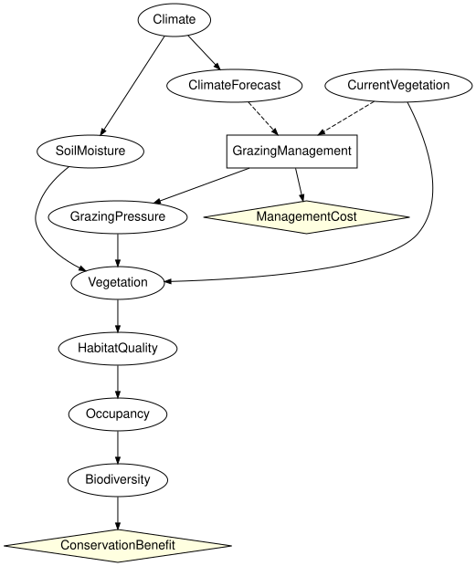

Composing ecology and management
Simon Frost
- Overview
- Setup
- Analysis 1: expected utility of each fixed action
- Analysis 2: the optimal conditional policy
- Analysis 3: dropping the vegetation survey
- Analysis 4: the value of observing the current vegetation
- Analysis 5: direct intervention versus deciding under uncertain implementation
- Round trip through the file formats
- Summary
- References
Overview
SPEC section 46 extends the reference ecological network of section 45 with a grazing management decision, an uncertain implementation and two utilities:
Climate -> ClimateForecast Climate -> SoilMoisture
CurrentVegetation ---------------------> Vegetation -> HabitatQuality -> Occupancy -> Biodiversity
GrazingManagement (decision) -> GrazingPressure -> Vegetation
information: ClimateForecast, CurrentVegetation -> GrazingManagement
utilities: ConservationBenefit(Biodiversity), ManagementCost(GrazingManagement)The decision acts on the vegetation only through GrazingPressure, whose kernel encodes imperfect implementation (SPEC section 42): excluding grazing yields low pressure with probability 0.95, maintaining it with probability 0.15. This vignette runs the five analyses required by SPEC section 46, reading the model from the Netica file shipped with BayesianNetworkFormats.jl. The pattern – an ecological network, a management decision acting through an imperfectly implemented lever, and a conservation benefit weighed against a cost – is the one the ecological Bayesian-network literature builds decision models around (Marcot et al. 2006; Runge et al. 2011).
Setup
using InfluenceDiagrams
g = read_influence_diagram(fixture_path("dne/grazing_reference_id.dne"))InfluenceDiagramModel(10 variables, 1 decision, 2 utilities, 9 kernels, 2 bound)The file and reference_grazing_model (the same diagram built in Julia) agree, and the GeNIe variant reads identically:
g ≈ reference_grazing_model(), read_influence_diagram(fixture_path("xdsl/grazing_reference_id.xdsl")) ≈ g(true, true)to_graphviz(g; states = false)
information_names(syntax(g), :GrazingManagement), utility_names(syntax(g))([:ClimateForecast, :CurrentVegetation], [:ConservationBenefit, :ManagementCost])Analysis 1: expected utility of each fixed action
expected_utility(g, :D => :a) fixes the decision (a constant policy) and evaluates the additive utility, conservation benefit minus management cost, by brute force over the joint law.
fixed = [a => expected_utility(g, :GrazingManagement => a) for a in (:exclude, :reduce, :maintain)]3-element Vector{Pair{Symbol, Float64}}:
:exclude => 2.4222434624999543
:reduce => 24.841826199999947
:maintain => 36.52414686250001The benefit is 100 times the probability of high biodiversity; the cost is 40, 15 or 0.
[a => 100 * marginal(instantiate(fix_decision(g, :GrazingManagement => a)), :Biodiversity).table[2]
for a in (:exclude, :reduce, :maintain)]3-element Vector{Pair{Symbol, Float64}}:
:exclude => 42.42224346249999
:reduce => 39.84182619999999
:maintain => 36.5241468625Analysis 2: the optimal conditional policy
sol = optimize(g)
sol.expected_utility36.524146862500004The policy table is indexed by the information set in order: rows are the climate forecast (dry, normal, wet), columns the current vegetation (sparse, moderate, dense). With the fixture’s numbers the management cost (40 for exclusion) dominates a conservation benefit of at most 100, so the optimal policy maintains grazing whatever the information, and the maximal expected utility equals the best fixed action:
policy_table(sol.strategy[:GrazingManagement])3×3 Matrix{Symbol}:
:maintain :maintain :maintain
:maintain :maintain :maintain
:maintain :maintain :maintainThe optimum is confirmed by exhaustive search over all $3^9$ deterministic strategies:
optimize(g, ExhaustivePolicySearch()).expected_utility, maximum(last.(fixed))(36.52414686249999, 36.52414686250001)A decision problem is only interesting when the information can change the decision. Valuing high biodiversity ten times more (a reserve, say) is a one-line change of the utility bound to the ConservationBenefit node; the syntax, the kernels and the information structure are untouched. The optimal policy now reacts to both the forecast and the survey:
h = bind_utility(g, :ConservationBenefit => [0.0, 1000.0])
solh = optimize(h)
solh.expected_utility, policy_table(solh.strategy[:GrazingManagement])(384.64721647500005, [:reduce :exclude :exclude; :exclude :exclude :reduce; :exclude :exclude :reduce])[a => expected_utility(h, :GrazingManagement => a) for a in (:exclude, :reduce, :maintain)]3-element Vector{Pair{Symbol, Float64}}:
:exclude => 384.22243462499995
:reduce => 383.41826199999963
:maintain => 365.2414686250003The remaining analyses use this valuation.
Analysis 3: dropping the vegetation survey
without_information removes an arc and drops the policies whose signature changed. Without the survey the policy can only react to the forecast:
nosurvey = without_information(h, :GrazingManagement, :CurrentVegetation)
sol3 = optimize(nosurvey)
information_names(syntax(nosurvey), :GrazingManagement), sol3.expected_utility, policy_table(sol3.strategy[:GrazingManagement])([:ClimateForecast], 384.22243462500006, [:exclude, :exclude, :exclude])Analysis 4: the value of observing the current vegetation
The value of the survey is the difference between the two optima (SPEC section 35):
expected_value_of_information(nosurvey, :CurrentVegetation, :GrazingManagement)0.424781849999988The forecast is worth less than the survey, and perfect information about everything upstream of the decision bounds what any monitoring programme could be worth:
(forecast = expected_value_of_information(without_information(h, :GrazingManagement, :ClimateForecast),
:ClimateForecast, :GrazingManagement),
soil_moisture = expected_value_of_information(h, :SoilMoisture, :GrazingManagement),
perfect = expected_value_of_perfect_information(h, :GrazingManagement))(forecast = 0.10183635000004188, soil_moisture = 0.6800548999999592, perfect = 0.680054900000016)Analysis 5: direct intervention versus deciding under uncertain implementation
A hard intervention do(GrazingPressure = low) replaces the mechanism of the grazing pressure by a point mass: the pressure is low whatever the decision, and the decision only carries its cost. A management decision followed by uncertain implementation is the diagram as read: choosing exclude makes low pressure likely but not certain, and the cost is paid regardless.
direct = do_intervention(h, :GrazingPressure => :low)
intervened_variables(direct), history(direct)[1].kind([:GrazingPressure], :hard)Under the intervention the management decision no longer affects the ecology, so the optimal policy is the cheapest action, maintain:
sol_direct = optimize(direct)
sol_direct.expected_utility, unique(policy_table(sol_direct.strategy[:GrazingManagement]))(427.908745, [:maintain])The conservation benefit of guaranteed low pressure compared with the best decision under imperfect implementation, and with excluding grazing (the closest a manager can get to do(GrazingPressure = low)), measures what perfect implementation would be worth:
benefit(m, a) = 1000 * marginal(instantiate(fix_decision(m, :GrazingManagement => a)), :Biodiversity).table[2]
(do_low = benefit(direct, :maintain), exclude = benefit(h, :exclude), maintain = benefit(h, :maintain))(do_low = 427.90874499999984, exclude = 424.22243462499995, maintain = 365.241468625)do_intervention on the action variable itself is different again: it removes the decision and installs a constant mechanism, which is the physical override of SPEC section 41, distinct from fix_decision, which keeps the decision and its information set and only changes the strategy.
override = do_intervention(h, :GrazingManagement => :exclude)
nparts(syntax(override), :Decision), expected_utility(instantiate(override)) ≈ expected_utility(h, :GrazingManagement => :exclude)(0, true)Round trip through the file formats
The model can be written back in any of the influence-diagram formats and read again.
dir = mktempdir()
for ext in ("dne", "xdsl", "net")
path = joinpath(dir, "grazing.$ext")
write_influence_diagram(path, g)
println(ext, ": ", read_influence_diagram(path) ≈ g)
enddne: true
xdsl: true
net: trueSummary
The reference grazing diagram shows the whole stack working together: an ecological network read from a Netica file, a management decision whose effect reaches the vegetation only through an imperfectly implemented GrazingPressure, two utilities, and the five SPEC section 46 analyses answered by the same optimize, expected_utility and expected_value_of_information used on the toy problems. Deciding under uncertain implementation is worth strictly less than intervening directly, which is the point of keeping the implementation kernel in the diagram, and the model survives a round trip through all three influence-diagram file formats. This is the last vignette of InfluenceDiagrams.jl; EcologicalBayesianNetworks.jl takes the same analyses to published ecological networks.
References
<div id="refs" class="references csl-bib-body hanging-indent">
<div id="ref-Marcot2006" class="csl-entry">
Marcot, Bruce G., J. Douglas Steventon, Glenn D. Sutherland, and Robert K. McCann. 2006. “Guidelines for Developing and Updating Bayesian Belief Networks Applied to Ecological Modeling and Conservation.” Canadian Journal of Forest Research 36 (12): 3063–74. https://doi.org/10.1139/x06-135.
</div>
<div id="ref-Runge2011" class="csl-entry">
Runge, Michael C., Sarah J. Converse, and James E. Lyons. 2011. “Which Uncertainty? Using Expert Elicitation and Expected Value of Information to Design an Adaptive Program.” Biological Conservation 144 (4): 1214–23. https://doi.org/10.1016/j.biocon.2010.12.020.
</div>
</div>